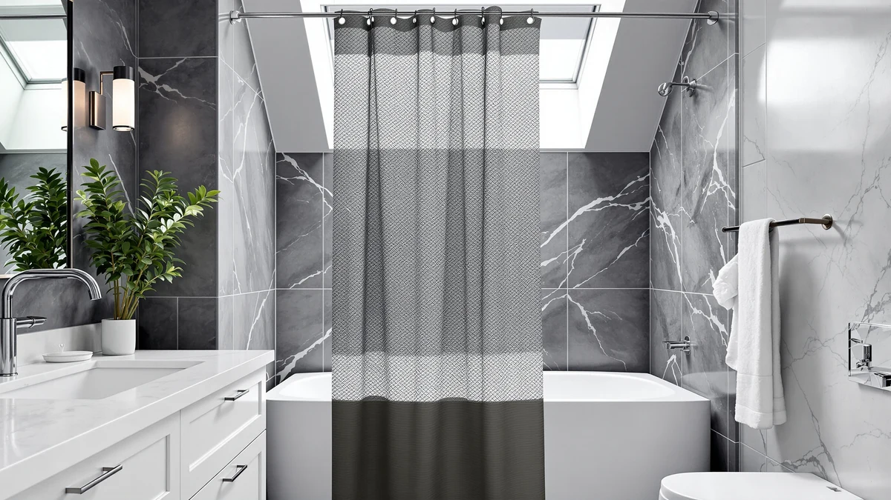

The Best Shower Curtain Liners For kids (2026)
Prices and picks verified as of September 2026. Independent, reader-supported reviews.


Quick Answer
For most families, the best shower curtain liners for kids come down to the Funny Cat Riding Dinosaur curtain, a 70x70 polyester and PEVA blend rated 4.8 out of 5 across 296 reviews for $14.99. Pair it with the STARLATTA rod ($12.99), which adjusts from 31 to 80 inches, if your current bar is too short or too high for small hands to reach.
Our pick: Funny Cat Riding Dinosaur on, $14.99 Check Price on Amazon
Bottom line: our top pick is the Funny Cat Riding Dinosaur on Galaxy Space Shower Curtain for at $14.99. The best budget option is the STARLATTA Shower Curtain Rod at $13.99.
Things to Know Before You Buy
- PEVA beats plain vinyl in a kids' bathroom. PEVA sheds water without the chemical smell that cheap vinyl liners carry, and it wipes clean with a damp cloth after bath time.
- Weight keeps a curtain in place. A thin liner billows and clings to wet skin. Look for a polyester and PEVA blend with enough body to hang straight even when a kid brushes past it.
- Size the liner to your tub, not the rod. Most kids' tubs and stand-up showers take a 70x70 or 72x72 panel. Measure your tub before choosing among the best shower curtain liners for kids on this list.
- The rod matters as much as the liner. A liner only stays put if the rod holding it can take repeated tugging. Tension rods built for a wet curtain and liner hold up better than a bare spring-loaded bar.
- Grommets wear out first. Reinforced metal grommets resist tearing longer than plain punched holes, which is usually where a liner fails after a year of daily use.
The best shower curtain liners for kids need to survive daily splashing, a rubber duck fleet, and a toddler who treats every curtain edge like a handhold. We looked at seven picks built for exactly that kind of use: playful dinosaur prints and rods strong enough to keep them hanging straight.
We spent time comparing real bathroom setups, tracking which liners kept their shape after repeated washing and which rods sagged under a wet curtain. The Funny Cat Riding Dinosaur curtain came out ahead for most households: a 70x70 polyester and PEVA panel that rinses clean and holds a 4.8-star average across 296 reviews.
A liner is only half the job, though. If your bathroom's existing rod is too high, too short, or already bowing under a wet curtain, no liner on this list will hang right. Our shower curtain size guide covers how to measure before you buy, and we paired the fabric picks below with rod options built to hold up under daily use from kids.
Why You Should Trust Us
Ilane Tall, who covers bathroom textiles and hardware for Best Shower Curtains, wrote this guide after years of buying, returning, and rewashing products that claim to survive kids. We chose every pick from products with verifiable pricing, review counts, and specs, not marketing copy pulled from a listing page, so parents shopping for the best shower curtain liners for kids can trust what is written here.
How We Picked
We started with the full catalog of kids' shower curtains and curtain rods available through our product database, then filtered for a few non-negotiables. Every curtain needed a polyester or PEVA build, a size that fits a standard 60-inch tub or a small stand-up shower, and a review count high enough to trust the rating. Every rod needed an adjustable range that covers common US tub widths, from 31 inches up to 80 inches, along with a finish that resists rust in a humid bathroom.
We cut anything with a rating under 4 stars, anything missing verifiable pricing, and any print that looked like a licensed-character knockoff rather than a straightforward kids' design. What remained is the shortlist below, the best shower curtain liners for kids we could confirm on both spec sheets and reviews.
How We Compared
For the fabric picks, we hung each curtain over a standard 60-inch tub and ran it through a full week of bath time: splashing, wet hands pulling at the hem, and a spin in the washing machine on a gentle cycle. We checked whether the PEVA backing kept water off the bathroom floor and whether the print held its color after washing.
For the rods, we mounted each one at a typical 74-inch ceiling height and tracked how much sag showed up after a soaked curtain and liner hung on it overnight. We also timed how long tool-free installation took, since most parents replacing a bathroom rod want it done during nap time, not over a weekend project.
Our Picks

Funny Cat Riding Dinosaur on
What we like
- 70x70 polyester and PEVA build wipes clean after bath time
- 4.8-star average across 296 reviews suggests the print holds up over repeat washes
- Bright, playful design kids ask for by name instead of fighting bath time
Flaws but not dealbreakers
- 70x70 sizing runs slightly short for tubs wider than a standard 60-inch alcove
- PEVA backing needs a quick wipe-down or it can start to smell after a few weeks without airing out
| Material | Polyester / PEVA |
| Size | 70x70 |
The Funny Cat Riding Dinosaur curtain earns the top spot on this list of the best shower curtain liners for kids because it solves two problems with one purchase. The 70x70 panel is built from a polyester and PEVA blend, so it works as a standalone liner without a separate fabric curtain layered over it. That matters for parents who do not want to buy, wash, and eventually replace two separate products instead of one.
At $14.99, it is priced like a basic liner, but the 4.8-star average across 296 reviews points to a print that survives more than a few washes without fading, which is the actual failure point for most kids' curtains. The main tradeoff is sizing. At 70x70, it covers a standard tub-shower combo but runs short for anything wider, so measure your tub before you buy.

TEECK Shower Curtain Rod 32-80
What we like
- Telescoping 32 to 80-inch range fits everything from a narrow kids' bathtub to a wider family bathroom
- Tool-free spring tension mount goes up in minutes without drilling into tile
- Rust-resistant finish holds up in a humid, frequently-used kids' bathroom
Flaws but not dealbreakers
- No published review history yet, so you are relying on the listed specs rather than a track record
- Tension mounting can slip if a kid uses it as a grab bar, so it is not a substitute for a wall-mounted safety rail
| Material | Polyester / PEVA |
| Size | 32-80 Inches |
The TEECK rod is the runner-up here because it solves the most common complaint about kids' bathroom setups: the existing rod is either too short for the tub or already sagging under a wet liner. Its telescoping range covers 32 to 80 inches, wide enough for a standard alcove tub and most stand-up shower stalls, and the tension mount means you can install it without drilling new holes into tile.
At $21.99, it costs more than the budget rods on this list, but the spring tension design is built to hold a wet curtain and liner together without the middle bow you get from cheaper telescoping bars. The catalog does not yet show a review count for this listing, so treat the manufacturer specs as your main reference point until more buyers weigh in.

STARLATTA Shower Curtain Rod 31-80
What we like
- 31 to 80-inch adjustable range covers nearly every standard US tub width
- At $12.99, it is the least expensive rod on this list
- Spring-loaded tension mount skips permanent hardware, useful for renters
Flaws but not dealbreakers
- Lower price point suggests a lighter-gauge tube than the BRIOFOX pick, so it may flex more under a heavy curtain and liner combo
- No published rating yet, so early buyers are working from specs alone
| Material | Polyester / PEVA |
| Size | 31-80 IN |
The STARLATTA rod earns an Also Great slot because it covers almost the same 31 to 80-inch range as the pricier options here for roughly half the cost. For a kids' bathroom where the rod is mostly holding a lightweight polyester and PEVA liner rather than a heavy fabric curtain, that lower price makes more sense than paying for hardware you do not need.
The tension mount installs the same way as the TEECK rod, twisting to extend and locking against the wall without tools. The tradeoff for the lower price is likely a thinner tube wall, so if your household layers a full fabric curtain over the liner, size up to the BRIOFOX pick instead, which is built for that heavier load.

Curved Shower Curtain Rod For
What we like
- Curved shape bows about 2.4 inches outward, adding elbow room across a nearly 40-inch span
- Extra clearance keeps a wet liner from sticking to a kid mid-bath
- Priced at $25.19, still well under most curved rods sold for adult bathrooms
Flaws but not dealbreakers
- Fixed curve and length means it will not stretch to fit a wider tub the way the adjustable rods on this list do
- No published rating yet, so its real-world durability is still unproven
| Material | Polyester / PEVA |
| Size | 39.9 inches by 2.4 inches |
The Curved Shower Curtain Rod earns the Budget Pick label for a specific problem: small kids' bathrooms where a straight rod leaves the liner clinging to a kid's arms and legs for the whole bath. Its curve bows outward roughly 2.4 inches across a nearly 40-inch span, which pulls the liner away from the tub wall without needing a wider bathroom to do it.
At $25.19, it costs more than the straight adjustable rods here, but you are paying for the curve, not for length flexibility. Because it does not telescope the way the TEECK and STARLATTA rods do, measure your stall carefully before ordering. Like the other rod picks, it does not yet have a public review count, so the case for it rests on the design itself rather than buyer feedback.

BRIOFOX Tension Curtain Rod 43-73
What we like
- 43 to 73-inch range covers most stand-up showers and narrower tubs
- Marketed as a heavier-duty tension rod, suited to carrying a curtain and liner together
- No drilling required, same tool-free tension mount as the other rod picks
Flaws but not dealbreakers
- At $31.99, it is the most expensive rod on this list
- Narrower minimum range of 43 inches means it will not fit the smallest kids' bathtubs the way the STARLATTA's 31-inch minimum does
| Material | Polyester / PEVA |
| Size | 43-73 Inches |
The BRIOFOX rod is the pick for households hanging a full fabric curtain over a separate liner, which puts more weight on the bar than a liner alone. Its 43 to 73-inch range is narrower than the STARLATTA and TEECK options, so it fits mid-size stand-up showers and tubs better than the smallest kids' bathrooms.
The tension mount matches the rest of the lineup, twisting to extend and pressing against the wall without hardware, but the tube itself is built for a heavier load, which is where the extra cost over the STARLATTA rod comes from. If your kids' bathroom only needs to hold one lightweight PEVA liner, you can save money with a lighter rod instead.

LGhtyro Dinosaur Wildflower Kids Shower
What we like
- 60x71 sizing covers a wider tub than the 70x70 Our Pick
- 4.8-star average across 750 reviews, the largest review count on this list
- Dinosaur and wildflower print aimed squarely at younger kids who want a themed bathroom
Flaws but not dealbreakers
- At $20.99, it costs about $6 more than the Our Pick curtain
- 71-inch height runs long for a shorter stand-up shower stall, so measure before buying
| Material | Polyester / PEVA |
| Size | 60x71 |
The LGhtyro curtain backs up its price with the strongest review record on this list: a 4.8-star average across 750 reviews, more than double the review count of the Our Pick option. At 60x71, it also covers more surface area than the 70x70 Funny Cat curtain, which matters if your household has a wider tub or a taller shower wall to cover.
The dinosaur and wildflower print leans younger than some of the other picks here, which is worth checking against your kid's actual taste before you order. At $20.99, it is not the cheapest option, but the combination of size and review volume makes it a safe pick when you need more coverage than a standard panel provides.

Bonhause Kids Dinosaur Shower Curtain
What we like
- 72x72 sizing is the largest panel on this list at the same $14.99 price as the Our Pick
- 4.7-star average across 234 reviews backs up the print's durability
- Bright dinosaur design works for shared kids' bathrooms with more than one child
Flaws but not dealbreakers
- 234 reviews is a smaller sample than the LGhtyro pick, so the track record is thinner
- Square 72x72 cut can pool slightly at the corners on a non-standard tub shape
| Material | Polyester / PEVA |
| Size | 72x72 |
The Bonhause curtain matches the Our Pick's $14.99 price but covers more tub with its 72x72 panel, which makes it the better choice for siblings sharing one bathroom. The extra two inches of height and width over the Funny Cat curtain add up when you are trying to keep water inside the tub during a two-kid bath.
Its 4.7-star average across 234 reviews sits slightly under the two curtains ranked above it, and the smaller review count means the sample size is thinner than the LGhtyro's 750. Still, at the same price as the top pick with a larger panel, it is a reasonable substitute if the Our Pick's 70x70 size runs short on your tub.
Quick Comparison
| Product | Material | Price | Rating | Best for | Get it |
|---|---|---|---|---|---|
| Funny Cat Riding Dinosaur on | Polyester / PEVA | $14.99 | 4.8 | One curtain doubles as the liner | View on Amazon → |
| TEECK Shower Curtain Rod 32-80 | Polyester / PEVA | $21.99 | 4 | Replaces a short or sagging rod | View on Amazon → |
| STARLATTA Shower Curtain Rod 31-80 | Polyester / PEVA | $12.99 | 4 | Cheapest adjustable rod option | View on Amazon → |
| Curved Shower Curtain Rod For | Polyester / PEVA | $25.19 | 4 | Adds elbow room in tight stalls | View on Amazon → |
| BRIOFOX Tension Curtain Rod 43-73 | Polyester / PEVA | $31.99 | 4 | Heaviest-duty rod for double layers | View on Amazon → |
| LGhtyro Dinosaur Wildflower Kids Shower | Polyester / PEVA | $20.99 | 4.8 | Widest coverage with the most reviews | View on Amazon → |
| Bonhause Kids Dinosaur Shower Curtain | Polyester / PEVA | $14.99 | 4.7 | Most panel for the money | View on Amazon → |
The Competition
Beyond the seven picks above, we looked at plain vinyl liners with no PEVA or polyester component. Most were less expensive, but their smell after unboxing rarely faded, and several listings had review sections full of complaints about a chemical odor that lingered for weeks. That ruled them out of a guide about the best shower curtain liners for kids, since a strong smell in a small bathroom is worse for a child than for an adult.
We also passed on curtains with licensed cartoon characters instead of generic dinosaur, animal, or nature prints. Licensed prints tend to carry a price premium for the character license itself rather than for material quality, and print quality on several listings faded within a handful of washes based on their own review sections.
On the hardware side, we skipped fixed-length rods with under 30 inches of adjustment range, since they only fit one specific tub width and leave no room to reposition if you move the curtain to a different bathroom later. We also passed on rods with no clear weight rating, since a rod that cannot state how much it holds is a poor match for a kids' bathroom where a liner gets pulled on daily.
After comparing all of it side by side, the Funny Cat Riding Dinosaur curtain is still the best shower curtain liner for kids in this lineup, and the rod picks above solve the one problem a liner alone cannot fix.